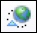
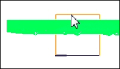
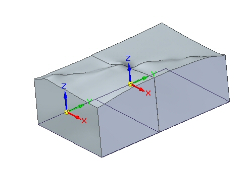

Publish the terrain model
The part documents containing the digital terrain solid bodies are created by publishing the terrain models. A unique subassembly contains each of the part documents when published.
-
Choose Home tab→Assemble group→Publish Terrain Models

. -
Click the part containing the mesh terrain.
Note:If only one meshed terrain model is in the assembly, the mesh terrain part is automatically selected.
-
Define the extent of the terrain by clicking above the part containing the terrain model.

Note:The exact location of the extent is not important because the Through Next option is used. The part containing the triangles defines the top face of the solid body.
Note:For Solid Edge data management users who selected the option Automatically name files via Document Number and Revision, the system displays a dialog box where you can assign common properties, such as document number and revision number, as explained in Create documents with unique properties.
The assembly structure and the digital terrain solid bodies are created.
